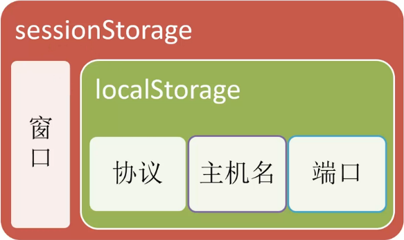

前端笔记05
localstorage
对浏览器来说，使用Web Storage存储键值对比存储Cookie方式更直观，而且容量更大，它包含两种：
- loalStorage（长期储存）：
- 生存期：与sessionStorage一样，但是浏览器关闭后，数据依然会一直存在
- 作用域：只要在相同的协议、相同的主机名、相同的端口下，就能读取/修改到同一份localStorage数据
- sessionStorage（临时存储）：
- 生存期：为每一个数据源维持一个存储区域，在浏览器打开期间存在，包括页面重新加载（标签页关闭后就消失了）
- 作用域：除了协议、主机名、端口外，还要求在同一窗口（也就是浏览器的标签页）下

VUE使用 this.$refs 来获取元素和组件
<div id="app">
<div>
<input type="button" value="获取元素内容" @click="getElement" />
<!-- 使用 ref 获取元素 -->
<h1 ref="myh1">这是一个大大的H1</h1>
<hr>
<!-- 使用 ref 获取子组件 -->
<my-com ref="mycom"></my-com>
</div>
</div>
<script>
Vue.component('my-com', {
template: '<h5>这是一个子组件</h5>',
data() {
return {
name: '子组件'
}
}
methods: {
show() {
console.log('调用了子组件的方法')
}
}
});
// 创建 Vue 实例，得到 ViewModel
var vm = new Vue({
el: '#app',
data: {},
methods: {
getElement() {
// 通过 this.$refs 来获取元素
console.log(this.$refs.myh1.innerText);
// 通过 this.$refs 来获取组件
console.log(this.$refs.mycom.name);
this.$refs.mycom.show()
}
}
});
</script>VUE路由
什么是路由
后端路由：对于普通的网站，所有的超链接都是URL地址，所有的URL地址都对应服务器上对应的资源；
前端路由：对于单页面应用程序来说，主要通过URL中的hash(#号)来实现不同页面之间的切换，同时，hash有一个特点：HTTP请求中不会包含hash相关的内容；所以，单页面程序中的页面跳转主要用hash实现；
在单页面应用程序中，这种通过hash改变来切换页面的方式，称作前端路由（区别于后端路由）；
在 vue 中使用 vue-router
导入
vue-router组件类库：<!-- 1. 导入 vue-router 组件类库 --> <script src="./lib/vue-router-2.7.0.js"></script>使用
router-link组件来导航<!-- 2. 使用 router-link 组件来导航 --> <router-link to="/login">登录</router-link> <router-link to="/register">注册</router-link>router-link默认渲染为一个<a>标签,里面不用写#使用
router-view组件来显示匹配到的组件<!-- 3. 使用 router-view 组件来显示匹配到的组件 --> <router-view></router-view><router-view>是vue-router提供的元素，专门用来当作占位符的
路由规则匹配到的组件，就会展示到这个router-view中去创建组件
// 4.1 使用 Vue.extend 来创建登录组件 var login = Vue.extend({ template: '<h1>登录组件</h1>' }); // 4.2 直接创建注册组件 var register ={ template: '<h1>注册组件</h1>' };创建一个路由
router实例，通过routers属性来定义路由匹配规则// 5. 创建一个路由 router 实例，通过 routers 属性来定义路由匹配规则 // 创建一个路由对象,导入 vue-router 包之后，在 window 全局对象中，就有了一个 路由的构造函数，叫做 VueRouter // 在 new 路由对象的时候，可以为 构造函数，传递一个配置对象 var router = new VueRouter({ // 这个配置对象中的 routes 表示 【路由匹配规则】 的意思 routes: [ // 每个路由规则都是一个对象，这个规则对象身上有两个必须的属性： // 属性1 是 path， 表示监听哪个路由链接地址； // 属性2 是 component， 表示如果路由是前面匹配到的 path ，则展示 component 属性对应的那个组件 // 注意： component 的属性值，必须是一个 组件的模板对象,不能是 组件的引用名称； { path: '/login', component: login }, { path: '/register', component: register } ] });注意：
component的属性值，必须是一个 组件的模板对象,不能是 组件的引用名称；使用
router属性来使用路由规则// 6. 创建 Vue 实例，得到 ViewModel var vm = new Vue({ el: '#app', router: router // 使用 router 属性来使用路由规则 });将路由规则对象，注册到
vm实例上，用来监听URL地址的变化，然后展示对应的组件
使用tag属性指定router-link渲染的标签类型
设置路由重定向
设置路由高亮
设置路由切换动效
在路由规则中定义参数
在规则中定义参数：
<div id="app"> <!-- 方式1 需要修改path属性--> <router-link to="/login/12/ls">登录</router-link> <!-- 方式2 使用 查询字符串 --> <!-- 如果使用查询字符串，给路由传递参数，则 不需要修改 路由规则的 path 属性 --> <router-link to="/register?id=10&name=zs">注册</router-link> <router-view></router-view> </div> <script> var router = new VueRouter({ routes: [ // 方式1 { path: '/login/:id/:name', component: login }, // 方式2 { path: '/register', component: register } ] }) </script>获取路由中的参数：
- 方式1：通过
this.$route.params
<script>
var login = Vue.extend({
// this可以省略
template: '<h1>登录 --- {{this.$route.params.id}}</h1>'
created(){ // 组件的生命周期钩子函数
console.log(this.$route.params.id)
}
});
</script>- 方式2：通过
this.$route.query
<script>
var register = Vue.extend({
// this可以省略
template: '<h1>注册 --- {{ $route.query.id }} --- {{ $route.query.name }}</h1>'
},
created(){ // 组件的生命周期钩子函数
console.log(this.$route.query.id)
}
});
</script>使用 children 属性实现路由嵌套
<div id="app">
<router-link to="/account">Account</router-link>
<router-view></router-view>
</div>
<template id="tmpl">
<div>
<h1>这是 Account 组件</h1>
<router-link to="/account/login">登录</router-link>
<router-link to="/account/register">注册</router-link>
<router-view></router-view>
</div>
</template>
<script>
// 组件的模板对象
var account = {
template: '#tmpl'
}
var login = {
template: '<h3>登录</h3>'
}
var register = {
template: '<h3>注册</h3>'
}
// 路由实例
var router = new VueRouter({
routes: [
{ path: '/', redirect: '/account/login' }, // 使用 redirect 实现路由重定向
{
path: '/account',
component: account,
children: [ // 通过 children 数组属性，来实现路由的嵌套
{ path: 'login', component: login }, // 注意，子路由的开头位置，不要加 / 路径符
{ path: 'register', component: register }
]
}
]
});
// 创建 Vue 实例，得到 ViewModel
var vm = new Vue({
el: '#app',
data: {},
methods: {},
components: {
account
},
router: router
});
</script>- 使用
redirect实现路由重定向，这里和nodejs中的redirect完全不是一回事，只用于客户端 children写在父亲的路由匹配规则里children:[{path:'path1',component:{cRouter1}},{path:'path2',component:{cRouter1}}]- 注意，子路由的开头位置，不要加
/路径符
命名视图实现经典布局
- 标签代码结构：
<div id="app">
<!-- 默认显示的是header -->
<router-view></router-view>
<div class="content">
<!-- name的内容是个字符串 -->
<router-view name="a"></router-view>
<router-view name="b"></router-view>
</div>
</div>- JS代码：
<script>
// 组件模板对象
var header = Vue.component('header', {
template: '<div class="header">header</div>'
});
var sidebar = Vue.component('sidebar', {
template: '<div class="sidebar">sidebar</div>'
});
var mainbox = Vue.component('mainbox', {
template: '<div class="mainbox">mainbox</div>'
});
// 创建路由对象
var router = new VueRouter({
routes: [
{
path: '/', components: {
// component的属性值必须是一个组件的模板对象，不能是组件的引用名称
default: header,
a: sidebar,
b: mainbox
}
}
]
});
// 创建 Vue 实例，得到 ViewModel
var vm = new Vue({
el: '#app',
data: {},
methods: {},
router
});
</script>- CSS 样式：
<style>
.header {
border: 1px solid red;
}
.content{
display: flex;
}
.sidebar {
flex: 2;
border: 1px solid green;
height: 500px;
}
.mainbox{
flex: 8;
border: 1px solid blue;
height: 500px;
}
</style>- 一个
path可以指定多个components - 路由对象的
components中name的内容是个字符串 flex: flex-grow flex-shrink flex-basis|auto|initial|inherit;flex-grow是一个数字，规定项目将相对于其他灵活的项目进行扩展的量- https://www.runoob.com/cssref/css3-pr-flex.html
watch、computed和methods之间的对比
computed- 属性的结果会被缓存，除非依赖的响应式属性变化才会重新计算。
- 主要当作属性来使用；
- 必须要
return
methods- 方法表示一个具体的操作，主要书写业务逻辑；
watch- 一个对象，键是需要观察的表达式，值是对应回调函数。
- 主要用来监听某些特定数据（尤其是不可观测的，如路由）的变化，从而进行某些具体的业务逻辑操作；
- 可以看作是
computed和methods的结合体；
method方法的使用
但是如果无法用事件绑定处理的数据变化，就无法用method，例如路由的变化。
<div id="app">
<!-- 分析： -->
<!-- 1. 我们要监听到 文本框数据的改变，这样才能知道 什么时候去拼接 出一个 fullname -->
<!-- 2. 如何监听到 文本框的数据改变呢？？？ -->
<input type="text" v-model="firstname" @keyup="getFullname"> +
<input type="text" v-model="lastname" @keyup="getFullname"> =
<input type="text" v-model="fullname">
</div>
<script>
// 创建 Vue 实例，得到 ViewModel
var vm = new Vue({
el: '#app',
data: {
firstname: '',
lastname: '',
fullname: ''
},
methods: {
getFullname() {
this.fullname = this.firstname + '-' + this.lastname
}
}
});
</script>watch属性的使用
- 监听
data中属性的改变：
<div id="app">
<input type="text" v-model="firstName"> +
<input type="text" v-model="lastName"> =
<span>{{fullName}}</span>
</div>
<script>
// 创建 Vue 实例，得到 ViewModel
var vm = new Vue({
el: '#app',
data: {
firstName: 'jack',
lastName: 'chen',
fullName: 'jack - chen'
},
methods: {},
watch: {
//'监听的属性'：该属性变化时执行的函数
'firstName': function (newVal, oldVal) { // 第一个参数是新数据，第二个参数是旧数据
this.fullName = newVal + ' - ' + this.lastName;
},
'lastName': function (newVal, oldVal) {
this.fullName = this.firstName + ' - ' + newVal;
}
}
});
</script>- 监听路由对象的改变：
<div id="app">
<router-link to="/login">登录</router-link>
<router-link to="/register">注册</router-link>
<router-view></router-view>
</div>
<script>
var login = Vue.extend({
template: '<h1>登录组件</h1>'
});
var register = Vue.extend({
template: '<h1>注册组件</h1>'
});
var router = new VueRouter({
routes: [
{ path: "/login", component: login },
{ path: "/register", component: register }
]
});
// 创建 Vue 实例，得到 ViewModel
var vm = new Vue({
el: '#app',
data: {},
methods: {},
router: router,
watch: {
'$route': function (newVal, oldVal) {
if (newVal.path === '/login') {
console.log('这是登录组件');
}
}
}
});
</script>computed计算属性的使用
默认只有
getter的计算属性：<div id="app"> <input type="text" v-model="firstName"> + <input type="text" v-model="lastName"> = <input type="text" v-model="fullname"> <span>{{fullName}}</span> </div> <script> // 创建 Vue 实例，得到 ViewModel var vm = new Vue({ el: '#app', data: { firstName: 'jack', lastName: 'chen' }, methods: {}, computed: { // 计算属性； 特点：当计算属性中所以来的任何一个 data 属性改变之后，都会重新触发 本计算属性 的重新计算，从而更新 fullName 的值 'fullname': function() { //也可以直接写 fullname(){ return this.firstName + ' - ' + this.lastName; } } }); </script>
- 计算属性，在引用的时候，一定不要加
()去调用，直接把它 当作 普通 属性去使用就好了； - 只要计算属性这个
function内部，所用到的任何data中的数据发送了变化，就会立即重新计算这个计算属性的值 - 计算属性的求值结果会被缓存起来，方便下次直接使用;如果计算属性方法中，依赖的任何数据都没有发生过变化，则不会重新对计算属性求值；
定义有
getter和setter的计算属性：<div id="app"> <input type="text" v-model="firstName"> <input type="text" v-model="lastName"> <!-- 点击按钮重新为 计算属性 fullName 赋值 --> <input type="button" value="修改fullName" @click="changeName"> <span>{{fullName}}</span> </div> <script> // 创建 Vue 实例，得到 ViewModel var vm = new Vue({ el: '#app', data: { firstName: 'jack', lastName: 'chen' }, methods: { changeName() { this.fullName = 'TOM - chen2'; } }, computed: { fullName: { get: function () { return this.firstName + ' - ' + this.lastName; }, set: function (newVal) { var parts = newVal.split(' - '); this.firstName = parts[0]; this.lastName = parts[1]; } } } }); </script>